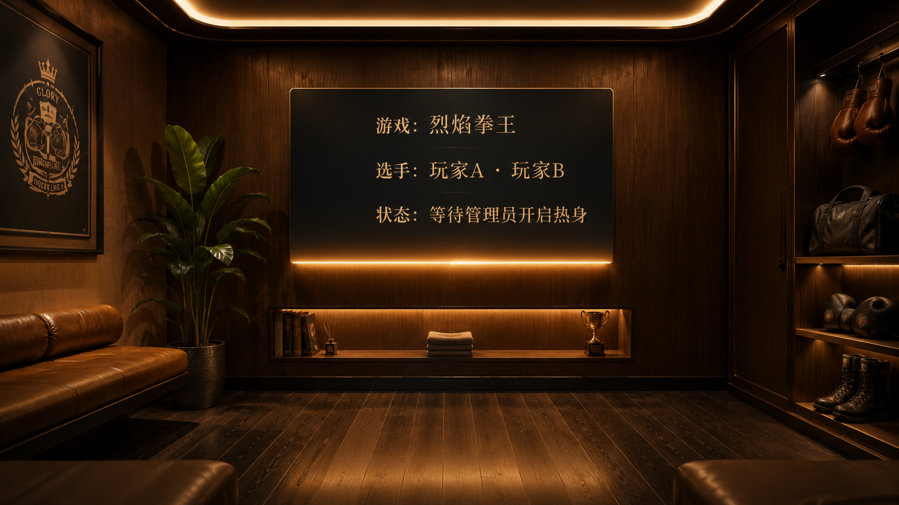

热身阶段位于管理员选择游戏之后、游戏正式开始之前，与 BETTING 阶段（选手报名 + 竞猜投注）在时间上并行，但触发时机独立：
① WAITING（赛事配置）
│ 管理员选择游戏、配置参数
│ 管理员点击「开始报名」
▼
② BETTING（选手报名 + 竞猜投注）
│
├─ 报名期：选手报名 → 管理员审核
│ │
│ │ 玩家进入游戏、佩戴 VR 设备
│ │ 佩戴后自动进入「等候空间」⏳
│ │ 管理员在手机/PC 看到玩家状态为「等候中」
│ │ 管理员点击「开启热身」──────┐
│ │ 玩家从等候空间切入热身场景 │
│ │ │
├─ 竞猜期：开启竞猜 → 观众下注 │ 🔥 热身并行
│ │ （管理员触发后启动）
│ │
▼ │
③ STARTED（正式比赛）◄──────────────────┘
│ 管理员点击「开始比赛」
▼
④ SETTLED（胜负结算）
核心目的：让玩家在正式对战前快速理解游戏玩法、掌握基本操作。
热身阶段为纯 PVE（人机） 模式，玩家仅与系统/AI 交互，无需 2 台及以上 VR 设备同时佩戴。玩家之间互不可见、互不互动，各自独立热身。
玩家在管理员点击「开始报名」后进入游戏、佩戴 VR 设备，随即自动进入「等候空间」——一个独立的 VR 待机环境。在该空间中：
| 要点 | 说明 |
|---|---|
| 触发条件 | 玩家佩戴 VR 设备后自动进入（管理员已点「开始报名」为前提） |
| 空间定位 | 纯待机场景，无任何教学或交互内容；玩家处于等待状态，直至管理员点击「开启热身」 |
| 视觉呈现 | 简洁、沉浸的等候环境；可展示当前场次信息（游戏名称、参赛选手等）作为轻量 HUD |
| 退出方式 | 管理员点击「开启热身」→ 玩家自动切入热身教学场景 |
| 管理员视角 | 手机/PC 后台对应玩家的状态显示为「等候中」 |

| 条件 | 说明 |
|---|---|
| 管理员已选择游戏 | 在 WAITING 阶段完成场次创建、选定游戏类型并配置参数 |
| 管理员点击「开始报名」 | 场次从 WAITING 进入 BETTING 阶段（报名期 + 竞猜期），玩家可进入游戏、佩戴 VR 设备。佩戴后自动进入「等候空间」，此时热身尚未启动 |
| 玩家佩戴 VR 设备就绪 | 玩家进入游戏后佩戴 VR 头显，自动进入「等候空间」，设备状态在管理员后台显示为「等候中」 |
| 管理员点击「开启热身」 | 管理员通过登录了管理员账号的手机端或 PC 端，确认目标玩家处于「等候中」状态后，点击「开启热身」按钮，对应玩家从等候空间切入热身教学场景 |
所有游戏将基础操作按顺序拆分为若干独立步骤，玩家完成当前步骤后方可进入下一步。
| 角色 | 热身期间行为 |
|---|---|
| 管理员 | 通过手机/PC 后台先点击「开始报名」启动 BETTING；查看玩家状态（等候中 / 热身中）；玩家处于「等候中」时点击「开启热身」触发教学；审核报名；开启竞猜；点击「开始比赛」结束热身 |
| 选手 | 进入游戏后佩戴 VR 设备，自动进入「等候空间」等待；被管理员「开启热身」后切入独立 PVE 教学场景，互不可见；无需扫码即可被管理员选入热身 |
| 观众 | 大屏观看规则视频；小程序围观报名、竞猜开启后下注 |
| 规则 | 说明 |
|---|---|
| 右侧步骤列表 | 仅显示当前步骤（高亮），其余步骤隐藏。完成后 ✅ 消失，下一步出现 |
| 步骤文字提示 | 进入新步骤时，游戏在玩家需要操作的节点暂停，同时展示顶部提示板文字供玩家阅读。玩家阅读完毕后做出确认手势（如双手伸出就位），游戏从当前操作节点恢复，玩家直接进入实操交互环节 |
| 命中反馈 | 白闪 0.6 秒 → ✅ → 暂停 2 秒 → 切入下一步 |
| 强制完成 | 是 |
热身过程中，所有教学提示文字出现时必须同步播放对应的语音播报，确保玩家在 VR 环境中无需刻意阅读也能理解操作指引。
| 触发节点 | 播报内容 | 说明 |
|---|---|---|
| 进入新步骤 | 当前步骤的顶部提示板全部文字 | 与文字展示完全同步，文字出现即开始播放 |
| 步骤内操作提示 | 操作指引文字（如「命中 3 次通过」） | 在玩家完成 1~2 次后若仍未通过，可复播一次简短提示 |
| 步骤完成 | ✅ 确认音效 + 语音「完成！」 | 与白闪和 ✅ 图标同步 |
| 场景介绍（步骤1） | 完整的欢迎文案语音 | 首次进入场景时播报，循环热身时不重复播报 |
| 规则 | 说明 |
|---|---|
| 语音语言 | 中文普通话，与 UI 文字语言一致 |
| 语音风格 | 清晰、温和、有节奏感的教学指导音色，语速适中（约 3~4 字/秒），非机械 TTS 感 |
| 文字与语音同步 | 文字逐句/逐段出现时，语音同步逐句播报；文字一次性全部展示时，语音一次性播完 |
| 可跳过 | 玩家做出确认手势（如双手伸出就位）后，语音立即中断，游戏进入实操环节；跳过不影响步骤通过判定 |
| 播完即过 | 语音播报完毕后，玩家仍需做出确认手势才能进入实操；语音不阻塞流程，仅作为辅助理解 |
| 复播机制 | 若玩家在实操环节 10 秒内无任何有效操作，语音自动复播一次简短操作提示（非完整文案），同时顶部提示文字高亮闪烁提醒 |
| 音量层级 | 语音播报音量 > 场景环境音 + 背景音乐（语音出现时背景音乐自动降低至 20% 音量），确保清晰可辨 |
| 不叠加 | 同一时刻仅播放一条语音；前一条未播完时触发新播报，前一条立即截断 |
| 阶段 | 文字 | 语音 | 玩家动作 |
|---|---|---|---|
| ① 进入步骤 | 顶部提示板展示 | 🔊 开始播报 | 阅读/听取 |
| ② 理解确认 | 保持展示 | 🔊 播报中 / 已播完 | 做出确认手势 |
| ③ 实操交互 | 提示板收起，HUD 保留关键信息 | 🔇 停止 | 执行操作 |
| ④ 超时提醒（可选） | 文字高亮闪烁 | 🔊 复播简短提示 | 继续尝试或手动跳过 |
| ⑤ 步骤完成 | ✅ 动画 | 🔊 「完成！」 | 自动进入下一步 |
热身阶段大屏播放当前所选游戏的规则说明视频，包含基本规则、操作演示、得分/胜负条件。竞猜开启后大屏同步展示实时赔率。小程序端：报名期选手报名审核，竞猜期观众下注。手机/PC 管理员端：①「开始报名」按钮 → ② 展示在线玩家列表及各玩家状态（未佩戴 / 等候中 / 热身中）→ ③ 玩家处于「等候中」时「开启热身」按钮可用 → ④ 管理员点击触发，玩家从等候空间切入热身场景。
热身阶段无时间限制，自管理员点击「开启热身」起，至管理员点击「开始比赛」或「返回首页」止。管理员点击「开始比赛」→ 倒计时 → 进入正式比赛（STARTED）。管理员点击「返回首页」→ 热身立即终止，VR 回等候场景。
| 游戏 | 规则 |
|---|---|
| 拳王 | 完成全部步骤后 10 秒无操作 → 回步骤 1 |
| 击剑/冰球/派对 | 完成后自动循环回步骤 1 |
🚧 重复触发规则（待定）：VR 不摘 + 玩家不变 → 后续场次跳过热身。